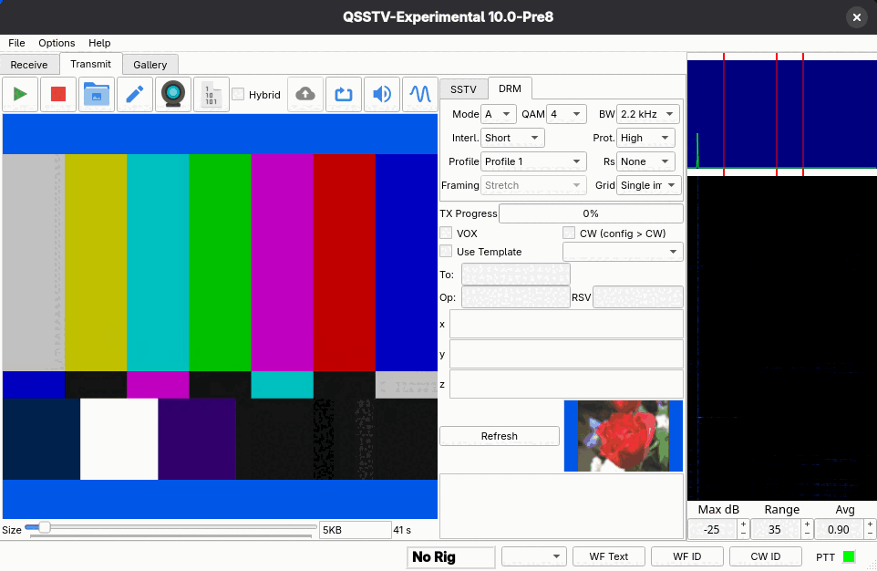

Digital SSTV (DRM)
What it is
HAMDRM, also called DSSTV or just DRM, sends a picture as compressed data using many carriers in a narrow 2.3 or 2.8 kHz channel (or a wide 4.8 kHz one for VHF/UHF FM), with error correction. Where analog SSTV degrades gradually with noise (noisy lines, color errors), DRM delivers a clean copy if the signal is good enough and loses data in whole segments if it is not. The HAMDRM software in this program is based on RX/TXAMADRM by PA0MBO. DRM and analog SSTV use the same SSTV/DRM settings tab on the Receive and Transmit pages; DRM is the DRM tab.
Transmitting a DRM picture
- On the Transmit tab choose the DRM settings tab.
- Load a picture (Transmitting) and optionally set Framing and Grid.
- Pick a Profile or set Mode, QAM, BW, Interleave, Protection and Rs by hand.
- Use the size slider to choose how much the picture is compressed. The box beside it shows the size in KB and the transmit time. Smaller means a faster but lower-quality picture.
- Press Start transmit.

Parameters
These come from the tooltips in the program.
| Setting | Choices | Meaning |
|---|---|---|
| Mode | A, B, E | Robustness mode. Higher mode letters are more robust but slower. |
| QAM | 4, 16, 64 | Bits per carrier. 4 is the most robust; 64 is the fastest but needs a clean signal. |
| BW | 2.3 kHz, 2.8 kHz, 4.8 kHz | Occupied bandwidth. Wider is faster. See Wide bandwidth for 4.8 kHz. |
| Interl. | Short, Long | Time interleaving. Long survives longer fades but adds delay. |
| Prot. | High, Low | Error-correction strength. High is more robust but slower. |
| Profile | Profile 1 to 3 | A saved parameter preset; edit them in Configuration > DRM. |
| Rs | None, RS1 to RS4 | Extra Reed-Solomon coding on file data. RS1 to RS4 add more redundancy: slower, more robust. |
| Encoding | JPEG2000, AVIF | Image compression used for the picture (default JPEG2000). See Image encoding. |
A good starting point is the default profile. If the other station reports errors, move to a more robust setting (lower QAM, higher protection, Long interleave, or a higher Rs).
Large pictures at 4-QAM can take many minutes. The command line option --drm-size (see
command line) and the size slider control the picture size.
Wide bandwidth (4.8 kHz)
The 4.8 kHz setting uses about twice as many carriers as 2.8 kHz and sends a picture roughly 1.5 to 2 times faster (about 1.55x to 2.1x in the loopback tests, depending on the mode and QAM). It needs no stronger signal per carrier, but the receiver gets about 3 dB more noise power for the same signal power, so weak-signal range is somewhat shorter.
- Use it only where the channel is that wide and flat: a VHF/UHF FM channel, or the audio path of a 9600 baud data (discriminator) port that bypasses the microphone filtering. A normal SSB or FM voice path passes only about 0.3 to 2.7 kHz. On HF the legal and practical limit is around 2.8 kHz, so keep 2.3 or 2.8 kHz there. Check your radio's audio response before relying on it.
- It is an extension. Stock Dream and older versions of QSSTV cannot receive it. Older QSSTV-Experimental versions do not lock on a 4.8 kHz signal (it fails their frame check) rather than showing a garbled picture.
- The receiver needs no setting: it recognizes the bandwidth from the signal, and the Receive status shows the bandwidth it found.
- The 2.3 kHz and 2.8 kHz modes are the same as the earlier 2.2 and 2.5 kHz settings (only the labels changed to the width actually occupied), so existing profiles and transmissions are unchanged.
Image encoding
The Encoding setting chooses how the picture is compressed. The size slider works the same way for both: it is the number of bytes the picture is compressed to, and the preview shows exactly what will be sent.
- JPEG2000 (default) gives a progressive picture: the receiver shows a preview that sharpens while the data arrives, and a partly received picture can still be viewed.
- AVIF often looks cleaner than JPEG2000 at small sizes (up to roughly 20 kB), with fewer blotchy artifacts, but the gain shrinks at larger sizes and fine texture can look slightly smoothed. AVIF is all or nothing: there is no preview while receiving and a damaged picture cannot be shown, so consider Reed-Solomon (Rs) with it. Encoding takes a fraction of a second per slider change.
The receiver needs no setting: it recognizes the format from the received data. To view an AVIF picture the receiving station needs the AVIF image plugin (included in the Windows and AppImage builds; the same one that is needed to open AVIF files). Without it the file is still saved. If AVIF cannot be written on your system the option is grayed out, and if encoding fails the picture is sent as JPEG2000.
Receiving
Select the DRM settings tab on the Receive tab and leave the receiver running. The status indicators TIME, FRAME, FAC and MSC turn on as the signal is found, and the picture is assembled segment by segment. The indicators and their meanings are described under Receiving. When the picture is complete it is saved in the RX DRM Images directory and shows in the gallery's RX DRM tab. Check the MER numbers: they tell you how clean the signal is.
Fixing an incomplete picture
If some segments were lost, press Fix File on the DRM receive tab. A dialog titled Send BSR (latest on top) lists the incomplete pictures. Choose one and press Compatible or Easypal to match the style the other station's software understands. The program then transmits a BSR (block status report) asking the sender to resend the missing segments. If no incomplete DRM picture has been received, you are told there is nothing to request. Fix File is only active in DRM mode when the program is not busy transmitting or receiving.
Binary files
The Send binary file toolbar button on the Transmit tab sends an arbitrary file as DRM data. If hybrid mode is on, the file is uploaded first and you confirm with Start Transmitting.
Hybrid mode
With Hybrid ticked on the Transmit tab's DRM mode, the picture goes to an internet server as well as over the air. The setup is on the Hybrid configuration page. When it is enabled, the Upload Now button uploads the current picture without transmitting. On the receiving side, the Receive tab's DRM page has the notification box and the Who is on? button. The Operator page's online status option controls whether other users can see you in their Who is on? list; it uses the same server, is published once when the program starts in DRM mode, and stays listed for an hour (details in Operator).